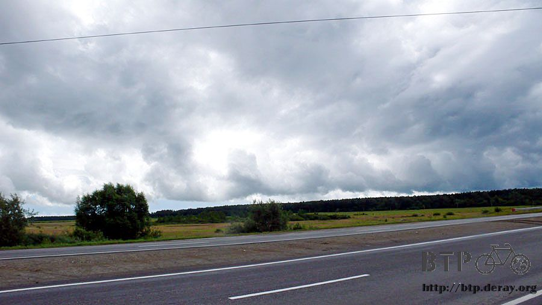

現在進行式
天氣很冷，今天穿著厚的衣服保暖，我終於知道為什麼哈薩克跟俄羅斯的窗戶都是做兩層的。
因為實在太冷了，一層窗戶擋不住冷空氣入侵屋內，昨天夜裡睡覺的時候非常能體會寒冷的感覺，即使現在明明是夏天。
手錶的氣象預報顯示下雨，非常堅定的圖案，一整天都沒有變動過，我期盼著是手錶故障，而不是真的得下一整天的雨。
不得不相信這個小小的氣象專家，早上一走出旅館，地上是昨天下過雨的積水，天上則是等待落下的雨滴。
離開鎮上之前先到商店報到，昨天找旅館的時候發現這邊的商店還真不少。
簡單買了一瓶水(想買沒有氣泡的都好困難，氣泡礦泉水真是有夠難喝)、一瓶果汁、一條蛋糕和一包餅乾，這就是目前的儲糧了。
在商店門口研究著該怎麼將東西打包進行李的時候，也是一大早就來買東西的大叔跟我閒聊兩句，可惜我都聽不懂。
既然大叔自己送上門，順便問他一下這邊該不會有網路吧？
本來只是不抱任何期望的隨口問問，結果這裡真的有網路，大叔本來是用手跟我解說位置，第三個路口左轉再右轉然後再左轉。
聽到後來我就決定放棄進城找網路，實在太複雜了，光是用聽的就讓我腦袋發昏。
大叔報完路之後就開車離開，三分鐘後又開車回來，那時候我還在研究怎麼打包，他說他開車領我過去，我在後頭跟著騎。
就這麼在鎮上晃呀晃的，先去了手機通訊行還有照相店，不是沒網路就是今天休息，我才想起來今天是星期日。
找了三個地方都沒有網路，我就想說不然算了，繞了那麼久我也該上路了，但是大叔一幫忙就堅持要幫到底。
換他去問別人這邊哪裡有網路？然後信心滿滿的帶著我走到小巷子裡，一間沒有招牌的網咖，店門口都是十幾歲的年輕人。
今天在舉行CS的比賽，店裡超級熱鬧，老闆本來沒空招呼我，但還是空出了一台電腦讓我用，就是他自己的電腦，其它都客滿了。
我用著老闆的電腦開始上傳遊記，有點妨礙他做生意的感覺，但真得很感謝他能讓我連上網路，也沒有獅子大開口的索價。
店裡正廝殺得火熱，一走出店門口則是冷冽的空氣，陰雨則滴滴答答的開始落下。
一騎出鎮上，第一件事情就是躲雨，沒辦法，才一大早就下大雨，我可不想整天都濕答答的在騎車。
窩在公車站牌，計劃躲一個小時，之後看雨會不會轉小，如果還是下大雨，那就繼續再躲一個小時。
躲雨的時候也沒閒著，拿出地圖開始研究俄羅斯的路線。
本來手上沒有地圖的時候覺得俄羅斯應該很好騎，就一直往西邊騎，看到人就問莫斯科該怎麼走？
這樣二十天之後應該就會抵達莫斯科，單純理想主義者的樂觀想法。
拿到地圖實際打開來看，這路線實在是複雜得令人頭昏眼花，要是沒這本地圖，騎半年也不見得能到了莫斯科。
公車站真適合躲雨，很安靜，又擋風，濕掉的衣服可以趁機乾一點回來，等等才可以再弄濕。
一個小時之後，雨勢真的如預期的減弱了，天空露出一點藍天，但大部分都還是很低的烏雲。
把握機會趁機上路，上網的事情已經算解決，本來今天要去找網路的大城市就直接跳過，一看到有近路可以抄，馬上提早左轉。
繞過天橋向西邊走，風向也跟著改變，迎面而來的逆風一吹也是一整天，車子非常難騎，讓我懷疑是不是什麼地方又壞掉了，怎麼會騎不動？
左轉之後是山路，起起伏伏的地形一直延伸下去，半路上又下起了大雨，只是這次沒地方可以躲，只好戴起帽子稍微擋一下。
雨停了之後才出現公車站，看著它發呆了一下，時也、命也、運也，揮別這個出現得太晚的公車站，繼續往下騎。
淋濕的衣服才乾了30%左右，雨勢又落下，心裡嘀咕著，眼前則是七百公尺有加油站的牌子，而這七百公尺則是上坡路。
等我騎到加油站的時候，又變成落湯雞，躲在這邊二十分鐘，想進去裡面光顧買點東西，一個老婆婆員工超級兇狠，幾乎是被唸出來的。
雨勢稍緩之後繼續騎車，若要等到雨停才走，可能得住在加油站才行。
有點讓我訝異的，居然看到了莫斯科的道路指示牌，可惜沒有標示距離，這一條則是M5道路。
沿著M5道路會騎到烏法，到烏法之後再轉M7道路，然後一直騎就會進入莫斯科，這是早上在公車站躲雨時研究的結果。
因為下雨的關係，要拿出相機拍照是很麻煩的事情，鏡頭被雨水弄濕的話，光是清理又得費一番工夫，
戴著帽子頂著逆風，頭稍微抬高一點，帽子就會被風給颳走，又要停車回頭去撿。
看著這又低又濃密的烏雲，好像要被雲層給活埋一樣，真的讓我見識到大自然的威力。

下雨天車輛疾駛的速度一點也沒有減慢，還得顧及路面的積水和坑洞，實在沒空去欣賞路旁有什麼美景。
這一片黃花田是今天停車撿帽子的時候才注意到的，我已經沿著它騎了好幾公里的路，但是居然都沒有發現這麼漂亮的景色。
在騎山路的時候，兩旁都是又高又直的白色樹木，茂密而廣大，不知道是天然的還是人工種植。
沿著這些樹木的路旁則是很多的小販，擺著幾個塑膠桶，裡頭都是摘採來的菇類。
各式各樣的都有，除了一般的草菇之外，還有大的像臉一樣的菇種。
而且生意挺好的，開過的車輛真的都會停下來採買，猜想價錢很便宜吧。
一路這麼往西騎，衣服淋濕又風乾，都快搞不清楚在身上穿的衣服到底是乾的還是濕的。
好不容易出現短暫的藍天白雲，但是手錶還是顯示下雨，無論如何，總算能輕鬆的騎一下車。
下午三點半的時候肚子開始餓了起來，回想今天吃的東西，不是餅乾就是巧克力配果汁，真的需要一點熱食來填肚子。
路旁正好是汽車休息區，小店搭起帳篷和冰箱並排著展開，空地則停滿了各式的車輛，大多是卡車。
牽著小多沿路走過這些小店，想找有賣熱食的店家，這一間店的女店員招手叫我過去。
我比了吃東西的手勢，她說沒問題，心裡想說可以大吃一頓了。
店裡的菜單很簡單，除了咖啡、啤酒這些，吃的東西只有三種，每個標價都是15元。
我說這三種都各給我來一個外加一杯咖啡，結果拿到三個熱麵包，外觀看起來一模一樣，裡頭則包著不同的餡料。
切碎的白煮蛋、熱呼呼的馬鈴薯泥、和煮軟的高麗菜，想吃大餐的期盼有點落空，但熱麵包還挺不錯吃的，連帶咖啡的味道好很多。
吃飽後繼續上路，還有七十幾公里要騎呢，前方又是延伸的山路，從地圖上看不出地形的起伏，實際騎到了才知道是什麼路況。
告示牌說小心會有鹿衝出來，讓我有點期待，結果沒看到鹿的蹤影，在這山道上，雨倒是下了不少，又濕了一次。

雨好不容易停了之後，就是下坡路段抵達今天的目的地，米阿斯，但它不是蓋在路旁，得離開大馬路往裡頭騎才行。
看到米阿斯的牌子但是這邊一片荒涼，房子什麼的都沒有，告示牌說市區還要再騎十公里，拜託饒了我吧。
再騎十公里只為了找餐廳吃飯和找旅館住一晚？
米阿斯郊區的房子倒是很漂亮，都沿著湖而建，小小的屋子配著尖尖的屋頂，家家戶戶幾乎都有溫室來種蔬菜水果。
非常自給自足的生活模式，可惜不能提供我需要的東西，掉頭離開米阿斯，在M5公路旁的卡車休息區吃晚餐。
這個時候是晚上八點半，還沒找到落腳處，可是空著肚子又淋一整天的雨，所需要的不只是睡一覺而已。
反正前途茫茫，繼續往前騎又是山路，填飽肚子再來想辦法。
有看到餐廳嗎？都是卡車對吧？卡車數量實在太多，餐廳都被淹沒在後頭，找一下還是能看到吃飯的地方。
店員很熱情，送上炸肉片配馬鈴薯泥，和熱奶茶、麵包，味道不錯，價錢也平穩許多。
吃飯的時候問店員這邊是24小時營業的嗎？如果是的話我就厚臉皮的在店裡待一晚上，可惜並沒有我想的那麼容易。
這邊不是24小時營業，沒辦法待一晚上，探聽住宿情報，最近的旅館還得往下騎八十公里。
接連兩個不怎麼如意的消息有點打擊吃東西的胃口，既然這樣，填飽肚子再買一大瓶水，趕路吧～
遊記既然能夠被寫出來，甚至能夠上傳到網路上，那就表示這一天不論再怎麼悽慘落魄，都還是撐過來了。
觀看遊記並不需要煩惱接下來該怎麼辦，只要看到最後一個字，自然會有解決的辦法，因為這已經是過去完成式。
但是在當下的我，則是現在進行式，連下一步該怎麼走都毫無頭緒，看著烏雲盤踞的山頭，我該何去何從？
腦袋裡浮現幾個想法，找公車站睡一晚上，但是那邊太開放了，閒雜人等又多，有點危險。
找破爛的房子窩一晚上，聽起來很不錯，但是上哪去找破爛的房子？其實我已經試過幾間，可是大門都深鎖。
露營在荒郊野外很容易，但是萬一夜裡下起大雨，就算帳棚防水，那放在外面的小多和包包淋了一整夜的雨，隔天也可以採收香菇了。
填飽肚子之後心情開朗許多，餓著肚子想事情都比較悲觀一點。
我需要屋頂，但不知道哪裡有，與其一直苦惱的想破頭，不如往前騎去碰碰運氣吧。
再次進入山路，幾百公尺之後又下起小雨，同時也出現加油站的牌子，靠過去一看發現是廢棄的加油站。
兩邊的出入口都用鐵絲圍籬封起來，這樣就不會有奇怪的人進進出出。
雖然已經停止營業，可是看起來還很新，而且很乾淨，看來這邊就是今天的落腳處了。
剛進入加油站的庇護之下，大雨就滂沱而下，看著這個雨勢，心中真是百感交集。
發現弄丟雨衣的當天期盼著接下來的旅行都不要下雨，結果雨卻是下個不停，我的雨衣呀～到底弄丟在什麼地方都搞不清楚。
下過大雨後太陽露臉三分鐘，天空出現漂亮的雙彩虹，此景稍縱即逝，一眨眼太陽又消失在烏雲之中。

將包包卸下來，小多則放倒，這樣路過的車輛從外頭望過來才不容易發現有人在裡頭。
攤開帳篷、睡墊充氣、溫暖的睡袋則是今天的床，這樣就完成了過夜的處所。

窩在舒服的帳篷裡，期盼著天色快一點黑，這樣路過的車輛才不會發現我的存在。
只是天色就是不黑，這個天空是晚上十點半拍攝的，依然那麼樣的明亮。
睡在廢棄加油站的經驗在單車環法的時候有過一次，那次真是集所有悲慘交集於一身，摔車、又冷得要命，不像現在有舒服的帳篷和睡袋。
這次旅行準備的比較萬全，除了動不動就淋雨之外，倒也沒發生什麼淒涼的事情。
將近午夜之後天色終於逐漸暗下來，夜間溫度很低，手錶的溫度計顯示不到十度，而天氣預報則依然是下雨。
今夜睡得非常安穩，和往常一樣，期盼著睡醒是晴天，除此之外別無所求。
繼續閱讀：7.23 寒冷的夏天
俄羅斯-盧布－ 1：1.3 台幣
7.22 |
總計：303.7元 |
商店蛋糕、水、餅乾、果汁81.7元、網路40元、點心麵包三個、咖啡57元、晚餐排骨薯泥、奶茶、麵包、冰淇淋90元、氣泡水35元 |
|